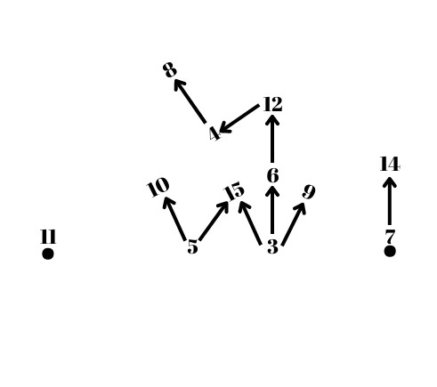

$$\eqalign{ & {\rm{Let}}\,\, \sim \,\,{\rm{is}}\,{\rm{an}}\,{\rm{ordering}}\,{\rm{relation}}\,{\rm{is}}\,{\rm{defined}}\,{\rm{on}}\,{\rm{the}}\,{\rm{set}}\,{\rm{of}}\,{\rm{natural}}\,{\rm{numbers}}\,\,{\rm{as}}\,\,{\rm{follows:}} \cr & \,\,\,\,\,\,\,\,\,\,\,\,\,\,\,\,\,\,\,\,\,\,\,\,\,\,\,\,\,\,\,\,\,\,\,\,\,\,\,\,\,\,\,\,\,\,\,\,\,\,\,\,\,\,\,\,\,\,\,\,\,\,\,\,\,\,\,\,\,\,\,\,\,\,\,\,\forall x,y \in \;{\rm{N}},\,x \sim y \Leftrightarrow \,x\,divides\,y(i.e.\,{y \over x} \in {\rm{N}}) \cr & \cr & {\rm{Let}}\,{\rm{A: = \{ 3,5,6,7,8,9,10,11,12,14,15\} }}\,{\rm{and}}\,{\rm{let}}\,{\rm{us}}\,{\rm{draw}}\,{\rm{the}}\,{\rm{diagram}}\,{\rm{showing}}\,{\rm{the}}\,{\rm{ordering}}\,{\rm{of}}\,{\rm{the}}\,{\rm{element}}\,{\rm{ of}}\,{\rm{the}}\,{\rm{set}}\,{\rm{A}}{\rm{.}} \cr & \cr & \sim : = \{ (3,3),...,(15,15),(3,6),(3,9),(3,12),(3,15),(4,8),(4,12),(5,10),(5,15),(7,14)\} \cr & \cr & \cr & \cr} $$

$$\eqalign{ & {\rm{From }}\,{\rm{this }}\,{\rm{diagram, }}\,{\rm{for }}\,{\rm{example,}} \cr & {\rm{We}}\,{\rm{cannot}}\,{\rm{compare}}\,3\,{\rm{and}}\,5.\,{\rm{So,}}\,{\rm{it }}\,{\rm{is }}\,{\rm{not}}\,{\rm{ possible}}\,{\rm{to}}\,{\rm{say}}\,{\rm{that}}\,5\,\,{\rm{is}}\,\,{\rm{greater}}\,{\rm{than}}\,3\,\,{\rm{directly}}\,{\rm{or}}\,{\rm{ 3}}\,{\rm{is}}\,\,{\rm{greater}}\,{\rm{than}}\,{\rm{5}}{\rm{.}} \cr} $$